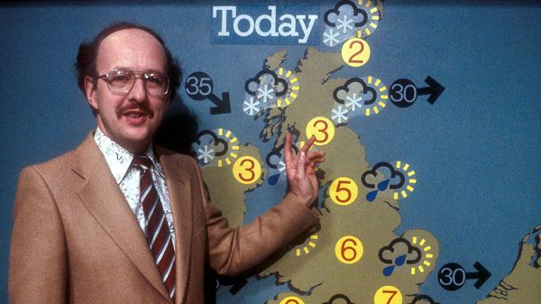
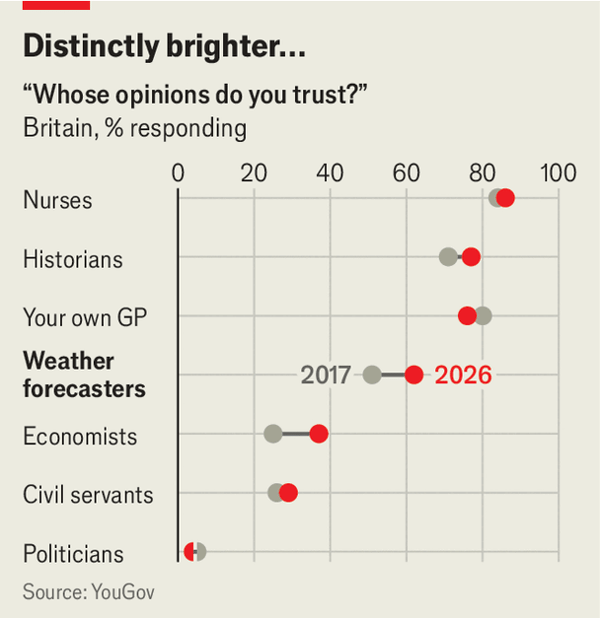
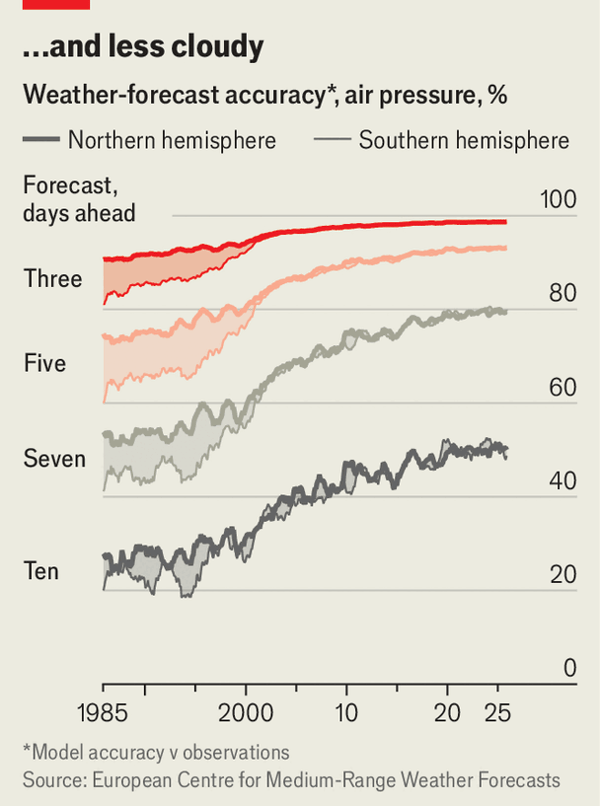

Jul 09, 2026 05:57 AM

Chatting about the weather is a national pastime in Britain—and successive heatwaves have recently given Britons lots to discuss. In the past, the obsession did not translate into faith in weather forecasters. Memories lingered of the “great storm” of 1987, a deadly cyclone. The BBC’s best-known forecaster, Michael Fish (pictured), said on air that a woman had called in worrying there might be a “hurricane” approaching Britain. “If you’re watching, don’t worry, there isn’t!” he quipped. Hours later the storm struck.

YouGov, a pollster, found in 2017 that barely half of people trusted forecasters to give them accurate information about the weather. But that has changed. A recent YouGov survey finds that now 62% of Britons trust them and just 25% are sceptical—still far behind trust in nurses (86%), but well ahead of economists (37%), let alone politicians (a mere 4%). The change is partly because forecasts are more accurate than ever thanks to advances in technology, suggests Alex Deakin of the Met Office. It also helps that fewer people today remember the 1987 storm.
Indeed, that storm prompted investment in weather-forecasting tech and communications protocols. Liam Dutton, a weather presenter for Channel 4 News, says the model he relies on divides Britain into squares of 2km (1.2 miles) a side, whereas a decade ago the highest resolution possible was 12km. The average accuracy of a forecast four days into the future is comparable to that of a one-day forecast in the 1990s. Under-25s, who grew up in an era of reliable forecasts, are by a large margin most likely to trust forecasters.

Climate change has raised the stakes by causing more extreme, sometimes life-threatening shocks such as prolonged heatwaves and sudden heavy downpours. “Being more accurate when it comes to those extreme events builds trust,” says Mr Deakin (though climate change also makes forecasting trickier). Since 2015, following the practice in America since the 1950s, the Met Office has given names to the biggest storms. The most recent was Storm Dave, in April. The agency believes this has helped engage the public. There are also colour-coded warnings for heat. A red alert in June was Britain’s second, after one in 2022.
Though it is now easier to predict the British weather, dealing with it remains a challenge. Older houses are built to hoard heat in the chilly winter; regulations mean that even most new-build homes lack air conditioning. The government has at least started to offer grants for homeowners to install heat pumps that also have a cooling function, which had previously been excluded from the most popular subsidy scheme. Nonetheless, when the mercury passes 30°C most Britons will continue to lose their cool. ■
For more expert analysis of the biggest stories in Britain, sign up to Blighty, our weekly subscriber-only newsletter.